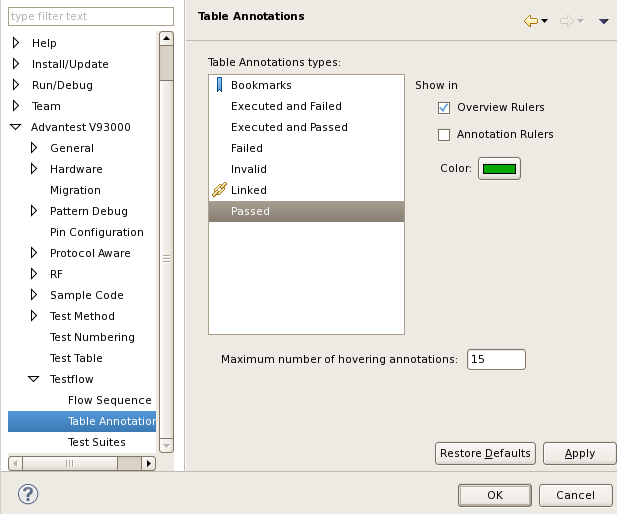

Testflow Tool - Table Annotations preference page
You can change the following preferences on the preference page.
- Show in Overview Rulers
Specify whether the selected annotation type is shown in the Overview Ruler on the right and bottom sides of the Flow Data editor.
- Show in Annotation Rulers
Specify whether the selected annotation type is shown in the Annotation Ruler on the left and top sides of the Flow Data editor.
- Color
Specify the color for the annotation marker of the selected annotation type on the right and bottom sides of the Flow Data editor.
- Maximum number of hovering annotations
Specify how many annotations are shown in the tooltip when you hover the mouse over an annotation.
- Table Annotations types
- Bookmarks
- Executed and Failed
- Executed and Passed
- Failed
- Invalid
- Linked
- Passed
The following displays the Table Annotations preference page.

Functional changes
- Introduced in SmarTest 6.5.2